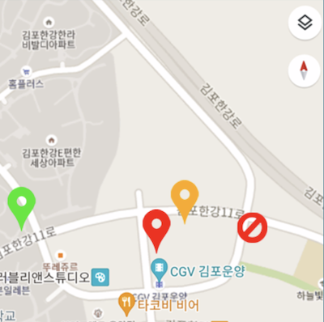
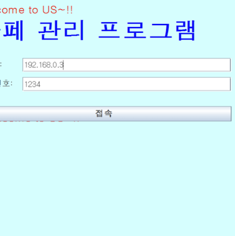
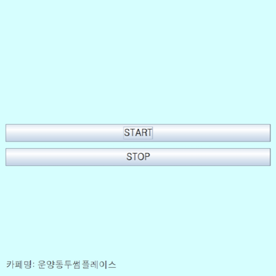

実装機能
|  |
カフェ別の人口数を照会する機能 私の近くのカフェから人口数を見ることができます。 現在営業中の地図がわかります。 |
|  |
ログインと会員登録する機能 カフェ専用プログラムにログインできます。 まだ会員でない場合は、会員登録できます。 |
|  |
人口を数える機能 「START」をクリックすると、定期的に顔認識をして人口数を数えます。 |
社会に貢献しようとしたこと
自分の周りのカフェに席がどれだけ満たされているかを一目で把握できるので、どのカフェに行って休むのが簡単にでき、無駄になることを最大限に防ぐことができます。 カフェではなく、食堂、銀行、住民センターなどでも役に立つと推定されます。
自分の周りのカフェに席がどれだけ満たされているかを一目で把握できるので、どのカフェに行って休むのが簡単にでき、無駄になることを最大限に防ぐことができます。 カフェではなく、食堂、銀行、住民センターなどでも役に立つと推定されます。
背景と目的
休憩のためにカフェを訪れましたが、すでに席がいっぱいになって別のカフェをまた探さなければならない問題が発生します。 また、カフェに電話して席がいっぱいになったか、毎回聞くのは面倒です。 そこで、この問題を解決するために、Python OpenCVを利用したカフェ内の人口数確認プログラムを実装しました。
休憩のためにカフェを訪れましたが、すでに席がいっぱいになって別のカフェをまた探さなければならない問題が発生します。 また、カフェに電話して席がいっぱいになったか、毎回聞くのは面倒です。 そこで、この問題を解決するために、Python OpenCVを利用したカフェ内の人口数確認プログラムを実装しました。
学んだこと
- PythonでOpenCVを利用する方法を学びました。
- JavaプログラムとPythonプログラムの連携方法を学びました。
- JavaからMulti Threadへの非同期方式の活用方法とMulti Threadingの構造を学びました。
- Java Swingでクライアントを実装する方法を学びました。
- AndroidにGoogle Mapを含める方法を学びました。
- Androidでクライアントを実装する方法を学びました。
- Javaでサーバーを構築し、MySQLでデータベースを構築し、JDBCと連携する方法を学びました。
進行手順
- Java Swingベースでカフェ専用プログラムを作成し、Androidアプリベースでユーザー専用プログラムを作成しました。この時、アプリ画面にGoogleマップを入れました。
- Javaでサーバーを構築し、MySQLでデータベースを構築した後、JDBCと連動しました。しかし、カフェ番組で情報を伝えても、何の反応もなかった。そこで、Googleで調べた結果、サーバーと情報をやり取りするためにカフェプログラムがThreadを継承するようにしました。 volatileを使って問題を解決できました。
- Pythonプログラムをカフェプログラムと連動させてから、Pythonプログラムで顔認識で人口数を数えるようにする必要がありますが、これは最も困難でした。
- OpenCVを使用した顔認識の例をGoogleで見つけ、ソースコード分析後の人口数も数えるように修正しました。
- そして、JavaプログラムでPythonプログラムを実行する例をGoogleで見つけた後、ソースコードを参照してPythonプログラムをカフェプログラムと連動させるようにしました。
- このようにして目的のプログラムを実装できました。
能力強化のために最も努力したこと
PythonでOpenCVを使用した顔認識と人口カウント機能の実装とJava Swingと連動
PythonでOpenCVを使用した顔認識と人口カウント機能の実装とJava Swingと連動
全体構造

使用技術
Android, Google Map, Python, OpenCV, Java, TCP, MySQL, AWS
Android, Google Map, Python, OpenCV, Java, TCP, MySQL, AWS
開発環境
Eclipse IDE, Android Studio, Python IDLE, PHPMyAdmin
Eclipse IDE, Android Studio, Python IDLE, PHPMyAdmin
追加の説明